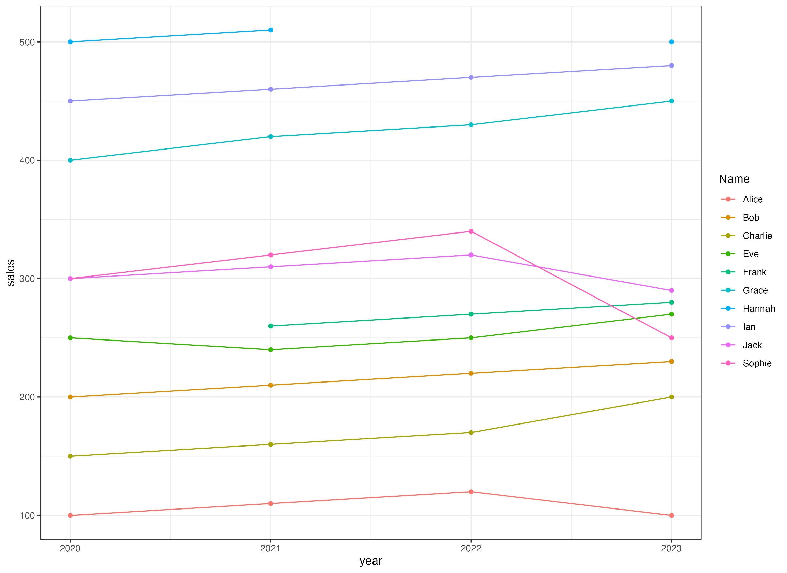
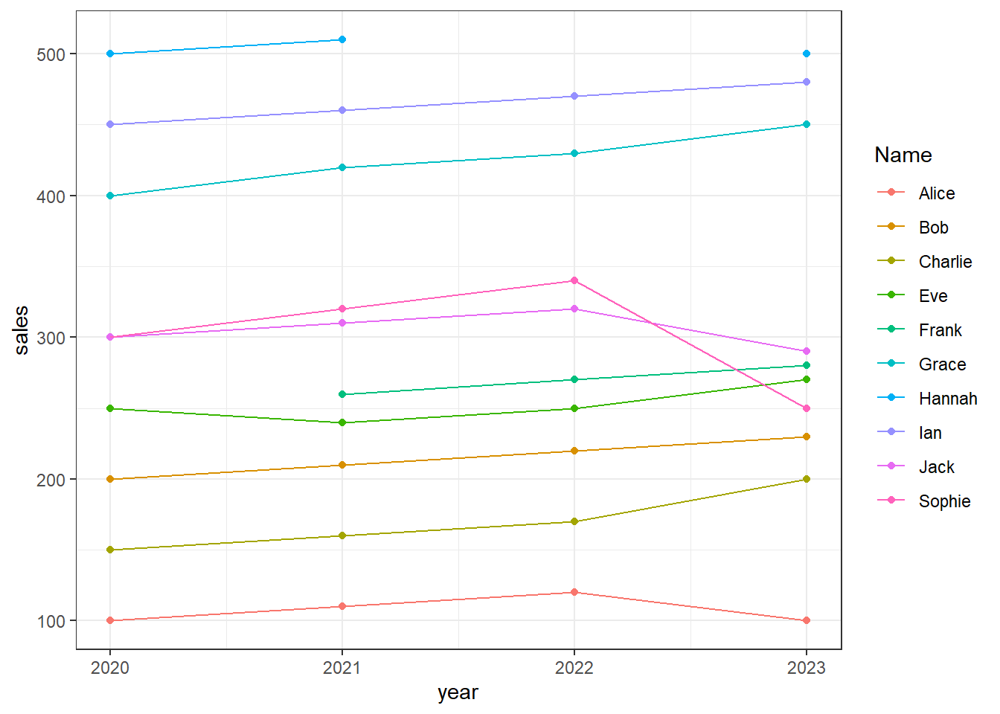

library(readxl)
library(tidyverse)Presentation 2: Advanced Data Wrangling
Load packages
Load data
df_sales <- read_excel('../out/sales_data_2.xlsx')Formats: Pivot long and wider
In tidyverse we primarily use two different formats: long and wide. The wide format is how you are probably used to seeing data presented with one column for each measured variable. However, when we need to plot, analyse or model data, we will often need them to be in the long format instead. It is therefore important that we know how to switch between them.
Pivot into long format
The goal of this section is to make a plot like this where we visualize the sales for each year across each employee.

The data is now in wide format. Can we make the plot in the way the data is formatted now?
Hint
No. To create the plot, we need a column for the years to use on the x-axis, a column for sales in thousands DKK, and a column for Names. While the Names column is already present, the sales data is spread across four separate columns, and there is no column for the year.
head(df_sales)# A tibble: 6 × 12
ID Name Age Sex sales_2020 sales_2021 sales_2022 sales_2023 mood
<dbl> <chr> <dbl> <chr> <dbl> <dbl> <dbl> <dbl> <chr>
1 1 Alice 25 Female 100 110 120 100 happy
2 2 Bob 30 Male 200 210 220 230 happy
3 3 Charlie 22 Male 150 160 170 200 happy
4 4 Sophie 35 Female 300 320 340 250 happy
5 5 Eve 28 Female 250 240 250 270 happy
6 6 Frank NA Male NA 260 270 280 happy
# ℹ 3 more variables: raise <chr>, group <chr>, City <chr>The data set is in wide format. The data can be restructured to long format such that there is one line per year per person. For this we use the pivot_longer function.
df_sales_longer <- df_sales %>%
pivot_longer(cols = starts_with("sales_"),
names_to = "year",
values_to = "sales"
)
head(df_sales_longer)# A tibble: 6 × 10
ID Name Age Sex mood raise group City year sales
<dbl> <chr> <dbl> <chr> <chr> <chr> <chr> <chr> <chr> <dbl>
1 1 Alice 25 Female happy no young_female Miami sales_2020 100
2 1 Alice 25 Female happy no young_female Miami sales_2021 110
3 1 Alice 25 Female happy no young_female Miami sales_2022 120
4 1 Alice 25 Female happy no young_female Miami sales_2023 100
5 2 Bob 30 Male happy yes mature_male Miami sales_2020 200
6 2 Bob 30 Male happy yes mature_male Miami sales_2021 210We can transform the year to integer.
df_sales_longer <- df_sales_longer %>%
mutate(year = str_remove(year, 'sales_') %>% as.integer())
head(df_sales_longer)# A tibble: 6 × 10
ID Name Age Sex mood raise group City year sales
<dbl> <chr> <dbl> <chr> <chr> <chr> <chr> <chr> <int> <dbl>
1 1 Alice 25 Female happy no young_female Miami 2020 100
2 1 Alice 25 Female happy no young_female Miami 2021 110
3 1 Alice 25 Female happy no young_female Miami 2022 120
4 1 Alice 25 Female happy no young_female Miami 2023 100
5 2 Bob 30 Male happy yes mature_male Miami 2020 200
6 2 Bob 30 Male happy yes mature_male Miami 2021 210Make the plot explained above (scatter and line plot over the sales development over the years for each person).
df_sales_longer %>%
ggplot(aes(x = year,
y = sales,
color = Name)) +
geom_point() +
geom_line() +
theme_bw()
# Saving the plot
# ggsave('../out/sales_2_plot.png', width = 10.37, height = 7.55, units = 'in')Pivot back into wide format
The pivot_wider function is used to get data to wide format.
df_sales_wider <- df_sales_longer %>%
pivot_wider(names_from = year,
values_from = sales,
names_prefix = 'sales_')
# Same content
head(df_sales)# A tibble: 6 × 12
ID Name Age Sex sales_2020 sales_2021 sales_2022 sales_2023 mood
<dbl> <chr> <dbl> <chr> <dbl> <dbl> <dbl> <dbl> <chr>
1 1 Alice 25 Female 100 110 120 100 happy
2 2 Bob 30 Male 200 210 220 230 happy
3 3 Charlie 22 Male 150 160 170 200 happy
4 4 Sophie 35 Female 300 320 340 250 happy
5 5 Eve 28 Female 250 240 250 270 happy
6 6 Frank NA Male NA 260 270 280 happy
# ℹ 3 more variables: raise <chr>, group <chr>, City <chr>head(df_sales_wider)# A tibble: 6 × 12
ID Name Age Sex mood raise group City sales_2020 sales_2021
<dbl> <chr> <dbl> <chr> <chr> <chr> <chr> <chr> <dbl> <dbl>
1 1 Alice 25 Female happy no young_fema… Miami 100 110
2 2 Bob 30 Male happy yes mature_male Miami 200 210
3 3 Charlie 22 Male happy yes young_male LA 150 160
4 4 Sophie 35 Female happy no mature_fem… New … 300 320
5 5 Eve 28 Female happy yes young_fema… LA 250 240
6 6 Frank NA Male happy yes <NA> New … NA 260
# ℹ 2 more variables: sales_2022 <dbl>, sales_2023 <dbl>Nesting
The long format can contain many repetitions e.g. information on the sales employee in df_sales_longer is repeated for every year. Instead of having many nearly identical rows we can use nesting to have just one row with the employee information and the associated sales data in its own ‘mini-tibble’.
We’ll group data by Name and nest year and sales into a single column that we will name sales_data.
df_sales_longer_nested <- df_sales_longer %>%
group_by(Name) %>%
nest(sales_data = c(year, sales)) %>%
ungroup()
head(df_sales_longer_nested)# A tibble: 6 × 9
ID Name Age Sex mood raise group City sales_data
<dbl> <chr> <dbl> <chr> <chr> <chr> <chr> <chr> <list>
1 1 Alice 25 Female happy no young_female Miami <tibble [4 × 2]>
2 2 Bob 30 Male happy yes mature_male Miami <tibble [4 × 2]>
3 3 Charlie 22 Male happy yes young_male LA <tibble [4 × 2]>
4 4 Sophie 35 Female happy no mature_female New York <tibble [4 × 2]>
5 5 Eve 28 Female happy yes young_female LA <tibble [4 × 2]>
6 6 Frank NA Male happy yes <NA> New York <tibble [4 × 2]>Now we have a structured dataset which is more readable.
Note: Nested data cannot be exported as an Excel or CSV file. Instead, you need to export it as an RDS file, a format specifically designed to save R objects.
We can extract the sales information for a particular employee using the pull function.
df_sales_longer_nested %>%
filter(Name == 'Bob') %>%
pull(sales_data)[[1]]
# A tibble: 4 × 2
year sales
<int> <dbl>
1 2020 200
2 2021 210
3 2022 220
4 2023 230Tidyverse helpers: across() and where()
Using across() to select columns
You probably noticed that we used a function to help us to summarise() all columns in Presentation 1:
df_tidyverse %>% summarise(across(everything(), ~ sum(is.na(.))))In this section we will say a bit more about the so called tidyverse helpers such as across(), where(), and starts_with(). These helpers are useful when we want to apply a functions, i.e. summarise(), or mutate() to several columns.
Let’s have an example. We know we can calculate the mean of each sales column like so:
df_sales %>%
summarise(mean(sales_2020),
mean(sales_2021),
mean(sales_2022),
mean(sales_2023))# A tibble: 1 × 4
`mean(sales_2020)` `mean(sales_2021)` `mean(sales_2022)` `mean(sales_2023)`
<dbl> <dbl> <dbl> <dbl>
1 NA 300 NA 305Note: We got some NAs because sales_2020 and 2022 contain NA values and we didn’t specify na.rm=TRUE. We will continue to see these in the below examples. Don’t worry about them for now, we will show you how to deal with them later!
But then we need to name every column we want to apply summarise to. across() instead lets us select the columns across which we want to apply summarise in a dynamic fashion:
df_sales %>%
summarise(across(everything(), mean))# A tibble: 1 × 12
ID Name Age Sex sales_2020 sales_2021 sales_2022 sales_2023 mood
<dbl> <dbl> <dbl> <dbl> <dbl> <dbl> <dbl> <dbl> <dbl>
1 5.5 NA NA NA NA 300 NA 305 NA
# ℹ 3 more variables: raise <dbl>, group <dbl>, City <dbl>We put the columns we want to select inside the brackets of across(). everything(), as you have probably guessed means all columns.
We will probably not want to calculate means on non-numeric columns, so let’s select only numeric columns. For that we need another helper caller where() that lets us select columns based on their properties, like data type.
df_sales %>%
summarise(across(where(is.numeric), mean))# A tibble: 1 × 6
ID Age sales_2020 sales_2021 sales_2022 sales_2023
<dbl> <dbl> <dbl> <dbl> <dbl> <dbl>
1 5.5 NA NA 300 NA 305There is another group of helpers that refers to column names:
starts_with()ends_with()contains()
And we can use them to select only columns starting with ‘sales’:
df_sales %>%
summarise(across(starts_with('sales'), mean))# A tibble: 1 × 4
sales_2020 sales_2021 sales_2022 sales_2023
<dbl> <dbl> <dbl> <dbl>
1 NA 300 NA 305If the column names follow some pattern like ‘sales_XXXX’ we can also employ num_range to specify them:
df_sales %>%
summarise(across(num_range('sales_', 2020:2023), mean))# A tibble: 1 × 4
sales_2020 sales_2021 sales_2022 sales_2023
<dbl> <dbl> <dbl> <dbl>
1 NA 300 NA 305Lastly, we can always straight up supply the names of the columns we want to select in a vector:
df_sales %>%
summarise(across(c(sales_2020, sales_2021), mean))# A tibble: 1 × 2
sales_2020 sales_2021
<dbl> <dbl>
1 NA 300All these ways can be used to select columns in tidyverse, also outside of across(). As an example, you’ve already see starts_with() in the Long Format section when we selected the columns to convert with pivot_longer():
df_sales %>%
pivot_longer(cols = starts_with("sales_"),
names_to = "year",
values_to = "sales")summarise() becomes more powerful!
Alright, so we now know how save ourselves from having to name every column we want to operate on, but what if we want to calculate several summary stats? There’s more to numbers than means!
Now that we have across() we can supply summarise with a list of summary functions to execute:
df_sales %>%
summarise(across(starts_with("sales"), list(mean, sd, min, max)))# A tibble: 1 × 16
sales_2020_1 sales_2020_2 sales_2020_3 sales_2020_4 sales_2021_1 sales_2021_2
<dbl> <dbl> <dbl> <dbl> <dbl> <dbl>
1 NA NA NA NA 300 131.
# ℹ 10 more variables: sales_2021_3 <dbl>, sales_2021_4 <dbl>,
# sales_2022_1 <dbl>, sales_2022_2 <dbl>, sales_2022_3 <dbl>,
# sales_2022_4 <dbl>, sales_2023_1 <dbl>, sales_2023_2 <dbl>,
# sales_2023_3 <dbl>, sales_2023_4 <dbl>Now we get one long row with mean, sd, min and max for every column starting with sales. We’re probably not super happy with the column names sales_2020_1, sales_2020_2, ect, so let’s add names that contain the function we’re executing (mean, ect). In order for this to work we must also name the functions:
df_sales %>%
summarise(across(starts_with("sales"),
list(mean = mean, sd = sd, min = min, max = max),
.names = "{.col}-{.fn}"))# A tibble: 1 × 16
`sales_2020-mean` `sales_2020-sd` `sales_2020-min` `sales_2020-max`
<dbl> <dbl> <dbl> <dbl>
1 NA NA NA NA
# ℹ 12 more variables: `sales_2021-mean` <dbl>, `sales_2021-sd` <dbl>,
# `sales_2021-min` <dbl>, `sales_2021-max` <dbl>, `sales_2022-mean` <dbl>,
# `sales_2022-sd` <dbl>, `sales_2022-min` <dbl>, `sales_2022-max` <dbl>,
# `sales_2023-mean` <dbl>, `sales_2023-sd` <dbl>, `sales_2023-min` <dbl>,
# `sales_2023-max` <dbl>Still not your preferred format? You can probably pivot your way out of that!
df_sales %>%
#run summarise on all sales columns
summarise(across(starts_with("sales"),
list(mean = mean, sd = sd, min = min, max = max),
.names = "{.col}-{.fn}")) %>%
#add reformating
pivot_longer(cols = everything(),
names_to = c("variable", "statistic"),
names_sep = "-") %>%
pivot_wider(names_from = statistic, values_from = value)# A tibble: 4 × 5
variable mean sd min max
<chr> <dbl> <dbl> <dbl> <dbl>
1 sales_2020 NA NA NA NA
2 sales_2021 300 131. 110 510
3 sales_2022 NA NA NA NA
4 sales_2023 305 131. 100 500The anonymous function: ~ and .
But wait! We still have those pesky NAs in our summary stats. Let’s just add the na.rm=TRUE argument. To not have too many things going on at once we’ll only do mean() for now:
df_sales %>%
summarise(across(starts_with("sales"),
list(mean = mean(na.rm = TRUE)),
.names = "{.col}-{.fn}"))Error in `summarise()`:
ℹ In argument: `across(...)`.
Caused by error in `mean.default()`:
! argument "x" is missing, with no defaultBrrrtt! We may not.

Why? We are requesting a function call across several columns and we’re doing it in shorthand. This is only permitted is there are no arguments to the function (mean(), sd(), ect). You will also notice that we didn’t use brackets after their names, which is part of using the function short hand.
If we need to pass arguments to functions inside another function call (i.e. calling mean inside summarise) we need to invoke the anonymous function. Don’t worry, it is much less ominous than it sounds! It is written as a ~ and looks like this:
df_sales %>%
summarise(across(starts_with("sales"),
list(mean = ~ mean(., na.rm = TRUE)),
.names = "{.col}-{.fn}"))# A tibble: 1 × 4
`sales_2020-mean` `sales_2021-mean` `sales_2022-mean` `sales_2023-mean`
<dbl> <dbl> <dbl> <dbl>
1 294. 300 288. 305The observant reader will also have noticed that a . has appeared in the brackets behind mean(). It simply means ‘the data previously referred to’, in this case every column starting with ‘sales’. We need to use the . because mean when called as a proper function needs to have an argument (a vector of numbers) to work on:
mean(df_sales$sales_2020,na.rm=TRUE)[1] 294.4444So this is it, we invoke the anonymous function for every statistic we want to calculate and now we may pass arguments:
df_sales %>%
#across and starts_with selects columns
summarise(across(starts_with("sales"),
#list the functions to execute
list(mean = ~ mean(., na.rm=T),
sd = ~ sd(., na.rm=T),
min = ~ min(., na.rm=T),
max = ~ max(., na.rm=T)),
#specify names of output columns
.names = "{.col}-{.fn}")) %>%
#add reformating
pivot_longer(cols = everything(),
names_to = c("variable", "statistic"),
names_sep = "-") %>%
pivot_wider(names_from = statistic, values_from = value)# A tibble: 4 × 5
variable mean sd min max
<chr> <dbl> <dbl> <dbl> <dbl>
1 sales_2020 294. 136. 100 500
2 sales_2021 300 131. 110 510
3 sales_2022 288. 115. 120 470
4 sales_2023 305 131. 100 500Other usage examples
The anonymous function and across are also useful inside mutate()! Our data has sales in thousands DKK, so lets multiply every value in every sales column with 1000:
df_sales %>% head(n=3)# A tibble: 3 × 12
ID Name Age Sex sales_2020 sales_2021 sales_2022 sales_2023 mood
<dbl> <chr> <dbl> <chr> <dbl> <dbl> <dbl> <dbl> <chr>
1 1 Alice 25 Female 100 110 120 100 happy
2 2 Bob 30 Male 200 210 220 230 happy
3 3 Charlie 22 Male 150 160 170 200 happy
# ℹ 3 more variables: raise <chr>, group <chr>, City <chr>df_sales %>%
mutate(across(starts_with("sales"), ~ . * 1000)) %>%
head(n=3)# A tibble: 3 × 12
ID Name Age Sex sales_2020 sales_2021 sales_2022 sales_2023 mood
<dbl> <chr> <dbl> <chr> <dbl> <dbl> <dbl> <dbl> <chr>
1 1 Alice 25 Female 100000 110000 120000 100000 happy
2 2 Bob 30 Male 200000 210000 220000 230000 happy
3 3 Charlie 22 Male 150000 160000 170000 200000 happy
# ℹ 3 more variables: raise <chr>, group <chr>, City <chr>What is happening here is we first select all columns starting with ‘sales’ by using across() and starts_with(). Then we say that we want to execute a function on each of these columns. The function shall be ‘multiply this column by 1000’. Multiplying by 1000 is written as * 1000 in R, ‘this column’ is . as we discussed before and ~ tells R that we’re executing a function.
Another cool example: Replacing NAs with 0s only in the columns starting with ‘sales’:
df_sales %>%
mutate(across(starts_with("sales"), ~ replace_na(.,0)))# A tibble: 10 × 12
ID Name Age Sex sales_2020 sales_2021 sales_2022 sales_2023 mood
<dbl> <chr> <dbl> <chr> <dbl> <dbl> <dbl> <dbl> <chr>
1 1 Alice 25 Female 100 110 120 100 happy
2 2 Bob 30 Male 200 210 220 230 happy
3 3 Charlie 22 Male 150 160 170 200 happy
4 4 Sophie 35 Female 300 320 340 250 happy
5 5 Eve 28 Female 250 240 250 270 happy
6 6 Frank NA Male 0 260 270 280 happy
7 7 Grace 40 Female 400 420 430 450 happy
8 8 Hannah 29 Female 500 510 0 500 happy
9 9 Ian 21 Male 450 460 470 480 happy
10 10 Jack 33 Male 300 310 320 290 happy
# ℹ 3 more variables: raise <chr>, group <chr>, City <chr>This is it for now but there will be user-defined functions later!